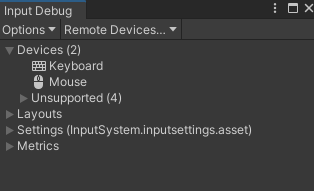

Unity Input System Step-By-Step 最简教程
#Overview
本教程极大程度的参考了 Unity Learn 上的官方教程[^1]，但并不是其翻译版本，而是根据我的学习过程进行相应增删改。
完整工程见：xuejiaW/InputSystemSample: A minimum unity project to illustrate how to use Unity new input system. (github.com)
Unity 有内建的 Input Manager 机制，这一套机制存在了非常久的时间。针对于传统的键盘，鼠标等输入，内置的 Input Manager 可以健壮的处理，但 Input Manager 的可拓展性不高。也因此随着输入设备种类的增多（如各类 XR 设备），Input Manager 无法优雅的解决这些输入。
Input System 是 Unity 为了解决 Input Manager 的上述问题，提供的高可拓展性，高自由配置的新输入解决方案。
对于新工程，Unity 官方都推荐使用 Input System 作为输入的解决方案，但 Input Manager 并不会短期内被废弃，因为历史包袱过重[^2]。
Input System 依赖 Unity 2019.1 及以上版本，本文档基于 Unity 2022.3.15f1 + Input System 1.7 编写
#Get Started
#安装 Input System
首先通过 Unity Package Manager 安装 Input System：

在安装 Package 后，会自动弹出如下窗口，该窗口表示 Input System 启用后需要重启 Editor Backend 才能正常使用，点击 Yes 启用 Input System，此时 Unity Editor 会自动重启：

当 Unity 重启后，根据 Unity 版本的不同，可能内置的 Input Manager 会被关闭，如果要重新启用，可以在 Edit -> Project Settings -> Player -> Other Settings -> Active Input Handling 中选择 Both：

至此 Input System 已经被正确安装。
为方便后续的调试，Demo 工程中预先引入了 URP 和一个最简的测试场景，此时的工程的见：A
xuejiaW/InputSystemSample at 7d041a5604c71096b0147cd0ae672557eee517c8 (github.com)
#创建 Input System Assets
为了使用 Input System，推荐先创建 Settings Asset，你需要在 Project Settings -> Input System Package 中创建相关资源：

该 Settings Asset 作为 Input System 全局的配置，但其并不是必须项。如果未创建该文件 Unity 会使用默认的 Input System 配置。
当点击创建后，会在工程的根目录创建出一个 InputSystem.inputsettings 文件，该文件即是 Input System 的总配置文件。同时原 Input System Package 页面也会包含有一系列的针对于 Input System 的配置项：

选择创建出来的 InputSystem.inputsettings 文件，在 Inspector 中会出现直接跳转到 Input System Settings 的按钮，点击该按钮，同样会跳转到上述 Input System Settings 的配置页面：

你可以随意修改 InputSystem.inputsettings 的位置，并不要求该文件必须在工程根目录下。
此时的工程状态见：
xuejiaW/InputSystemSample at 62aff15fcf5c3479e5a3073af7646a6c2775e043 (github.com)
#查看 Input Debugger 窗口
你可以在 Window -> Analysis -> Input Debugger 中打开 Input Debugger 窗口，该窗口中可以显示当前连接的输入设备：

#使用 Input System
#创建 Input Action Asset
如场景中有如下小球：

为了让其移动，可以为它添加一个 Player Input 组件，在 Player Input 组件上，选择 Create Action 创建出一个 Input Action 资源：

当点击后，会需要你选择保存的路径，选择后，会在该路径下创建出一个 Input Action 资源（ Input System.inputactions），并自动打开该资源的配置窗口，窗口如下所示：

创建出来的 Input Action Asset 资源如下所示，当点击该资源上的 Edit asset 按钮或双击该资源，都将打开上述的窗口：

具体查看 Input Action Asset 中的 Move Action，可以看到其中通过定义了可以通过键盘的 WASD 和 上下左右 触发：

此时按下 WASD 或 上下左右，会发现小球还 不能 移动，因为此时小球只是 获取 到了输入信息，但还是没有 处理 这些输入信息。
此时工程状态见：
xuejiaW/InputSystemSample at ed81be6f2efcf89c72f287240c9b56ea80a24094 (github.com)
#使用代码控制小球
为了处理 Input System 的输入信息，可以添加 PlayerController 脚本，其实现如下：
1 | using UnityEngine; |
其中的 OnMove 对应 创建 Input Action Asset 后 Asset 中的 Move Action：

对于 Asset 中任意名称的 Action，都可以通过 On<ActionName> 监听到。
如果 Action 叫做 AAA，则可以定义 OnAAA 函数监听。
将该脚本挂载在 Player 上，如下所示：

此时小球就可以通过键盘的 WASD 和 上下左右 移动：

此时的工程状态见：
xuejiaW/InputSystemSample at 9cb75b9a8719cc8e695ac32ad786adcc007494d8 (github.com)
#自定义 Action Asset
在上 创建 Input Action Asset 步骤中，创建出来的 Input Actions 是 Unity 默认实现的，即适合于 Player Input 组件的 Actions 资源。
Player Input 组件也是 Unity 内建的读取 Assets 资源的脚本
在这一节，会自定义 Actions 资源，并自定义使用该 Actions 资源的脚本。
#创建自定义 Action Asset
在 Project 面板中，空白处右键选择 Create -> Input Actions，创建出一个新的 Input Actions 资源：

双击创建的资源（本例中为 BallControls.inputactions ） 后会打开空白的 Input Actions 窗口：

此时点击画面左侧的 + 号可以创建出 Input Action Map，我们将新增的 Input Action Map 命名为 BallPlayer：

在窗口中间，可以为这个 Input Action Map 创建一些 Input Action，如下过程，创建了 Buttons 这个 Input Action：

在窗口的右侧，可以为 Input Action 创建一系列 Input Binding，如下步骤分别绑定了 GamePad 的 East Button 和 West Button ：

GamePad 的 East 和 West Button，在 Xbox 控制器上分别对应 X 键和 B 键
你也可以继续为 Buttons Action 绑定 Keyboard 的 F1 和 F2 按键，步骤如上，当绑定完成后，整个 Buttons Action 如下所示：

进一步创建 Move Input Action ，与 Buttons 不同是，Move 需要将 Action Type 设置为 Value，且 Control Type 为 Vector2，这表示 Action 会返回 Vector2 数据，即用于平面移动的上下左右数据：

如之前步骤一样，为该 Move Input Action 绑定 Left Stick，绑定后结果如下：

也可以将键盘上的按键通过 组合绑定（Composite Bindings） 至 Move Input Action，如下所示，其逻辑为使用四个按键分别表示 Vector2 四个方向（）：

分别为上下左右四个方向设定四个按键 K,J,H,L，结果如下所示：

至此，自定义的 Action Asset 创建完成，其中定义了使用 GamePad 和 Keyboard 两种输入设备，分别控制 Buttons 和 Move 两个 Action。将新建的 BallControls.inputactions 替换掉 Player Input 组件中的 Actions，即可使用新的 Action Asset：

此时运行游戏，可以发现通过手柄的左摇杆和 HJKL 都可以控制小球的移动，而 WASD 则不行了。
这是因为 PlayerController 脚本监听的 Motion 事件在 BallControls.inputactions 中也存在，因此我们定义的左摇杆和 HJKL 四个按键都能响应，即使不修改 PlayerController 也可以正常运行。而原 PlayerInput.inputactions 中的 WASD 我们并没有绑定，所以无法相应。
此时的工程状态见：
xuejiaW/InputSystemSample at 8d994e47fbf7c766c87aa62ce517e7e5bdda031b (github.com)
#创建自定义 Player Input
#手动解析 Actions Asset
自定义一个 BallController 脚本，用于解析刚刚创建的 BallControls.inputactions，其实现如下：
1 | public class BallController : MonoBehaviour |
可以看到，该脚本直接引用了之前的 InputActionAsset ，并使用了 InputActionAsset.FindActionMap](https://docs.unity3d.com/Packages/com.unity.inputsystem@1.7/api/UnityEngine.InputSystem.InputActionAsset.html#UnityEngine_InputSystem_InputActionAsset_FindActionMap_System_String_System_Boolean_) 找寻之前创建的 BallPlayer [Input Action Map，并在 OnEnable 和 OnDisable 时启用和禁用该 Input Action Map。
另外脚本中通过 InputActionMap.FindAction](https://docs.unity3d.com/Packages/com.unity.inputsystem@1.7/api/UnityEngine.InputSystem.InputActionMap.html#UnityEngine_InputSystem_InputActionMap_FindAction_System_String_System_Boolean_) 找寻之前创建的 Buttons 和 Move Action，并监听了 [Input Action 的 performed 事件，触发对应的回调函数 OnButton 和 OnMove。
至此 BallController 脚本已经完全实现了之前 Player Input + PlayerController 的功能，因此在 Player 游戏物体上仅需要 BallController 脚本即可，注意要将之前创建的 BallControls.inputactions 挂载至脚本中：

此时小球可以如同之前一样的通过手柄和键盘控制移动。
此时工程状态见：
xuejiaW/InputSystemSample at f070c14f0671d7c1c702b270f3751aed8c003692 (github.com)
#基于 Actions Asset 自动生成对应类
在 手动解析 Actions Asset 中需要手动管理 Actions Asset 并从中读取 Input Action Map 和 Input Action。
上述的读取过程，会随着 Action Assets 中的数据变更而出现潜在的失效（如命名错误），因此 Unity 提供了从 Action Assets 中自动创建相应脚本的能力，可以简化上述步骤。
可以选择 Action Assets 便选择，并勾选其中的 Generate C# Class ，选择需要创建的类名称，文件和命名空间，并点击 Apply 正式创建脚本：

此时会创建出对应的脚本：

修改之前的 BallController 脚本，以适配自动生成的 BallControls，如下：
1 | using UnityEngine; |
此时不再需要手动获取 Input Action Map 和 Input Action，只需要使用 <ActionControls>.<ActionMapName>.<Action> 的风格直接访问即可。
此时将之前挂载在 Player 上的的 BallController 脚本换为 BallController_AutoScripts 脚本，并运行，可以看到效果与之前的效果无差别。
此时工程状态见：
xuejiaW/InputSystemSample at a92af1df6ccfb22f2747548d2abf1a08c43a3407 (github.com)
#Reference
 wechat
wechat alipay
alipay